概述
上一讲介绍了Datapath（数据通路）的设置，本讲介绍Control（控制信号）的设计，描绘出处理器的雏形。这一部分我们还是以R型指令、load/store、beq指令为例介绍。
（一）整体设计
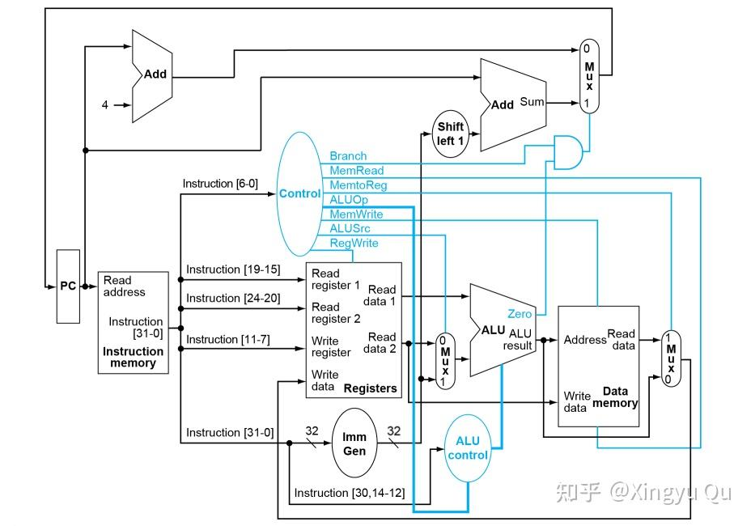
前述指令格式中的操作码（Opcode）字段用于区分指令类型；在处理器中，它进一步成为控制信号生成的主要输入。
计算机组成与体系结构 25fall 第 2 讲opcode（instruction[6:0]）通过control转换成control signal控制各个组件，根据现有的几条指令可以设计这些不同的控制信号：
（1）ALUSrc：ALU的数据来源，控制rd2/ImmGen的二路选择
（2）MemtoReg：是否从内存向寄存器写（主要控制lw）
（3）RegWrite：允许向寄存器写入
（4）MemRead：允许读内存
（5）MemWrite：允许写内存
（6）Branch：分支跳转指令标志信号
（7）ALUOp：控制不同指令下的ALU行为，load/store指令-00、branch指令-01、R-type-10
接下来我们分指令介绍这些控制信号的设置，在设置每一组指令的控制信号之前，需要了解指令的操作流程。
计算机组成与体系结构 25fall 第 6 讲（二）R-type
R-type指令的操作码为0110011，指令汇编形式例如 add x7, x5, x6
ALUSrc=0：第二个操作数来自rs2
MemReg=0：不从内存写入寄存器
RegWr=1：允许写寄存器
MemRd=0：不读内存
MemWr=0：不写内存
Branch=0：不是分支指令
ALUOp=10
此外，在R-type指令中需要设置ALU 控制器，来规定ALU进行add/sub/and/or计算操作，完整的ALU 控制器如下图示。
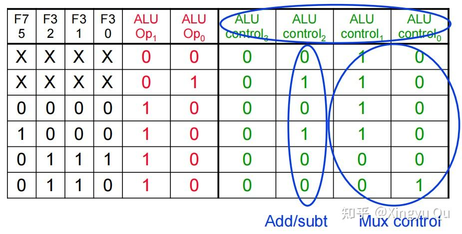
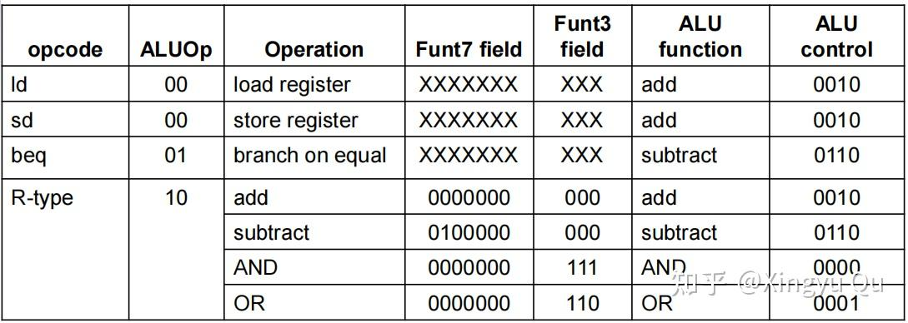
R型指令的完全通路为：
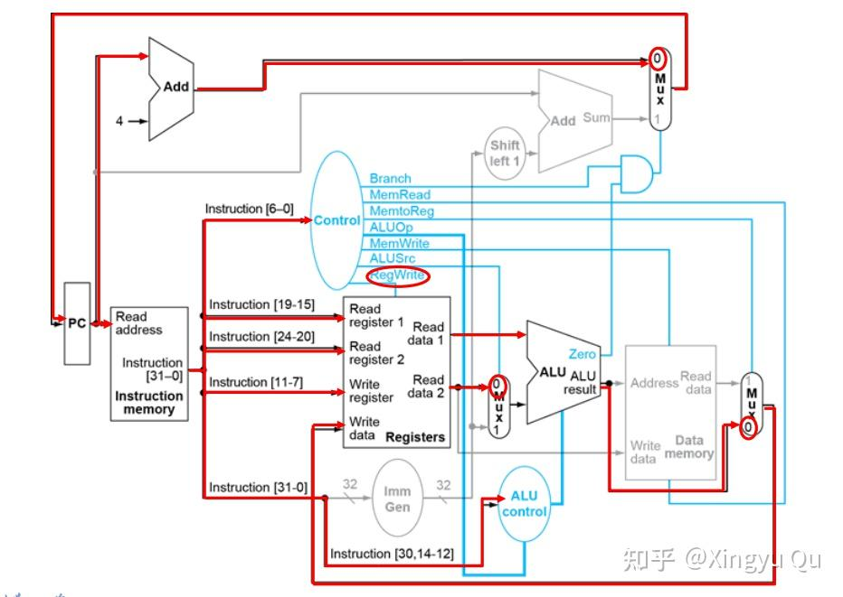
（三）load指令
lw指令操作码为0000011，指令汇编格式形如 lw x6, 8(x5)
ALUSrc=1：第二个操作数来自ImmGen
MemReg=1：从内存写入寄存器
RegWr=1：允许写寄存器
MemRd=1：读内存
MemWr=0：不写内存
Branch=0：不是分支指令
ALUOp=00
load指令的完全通路为：
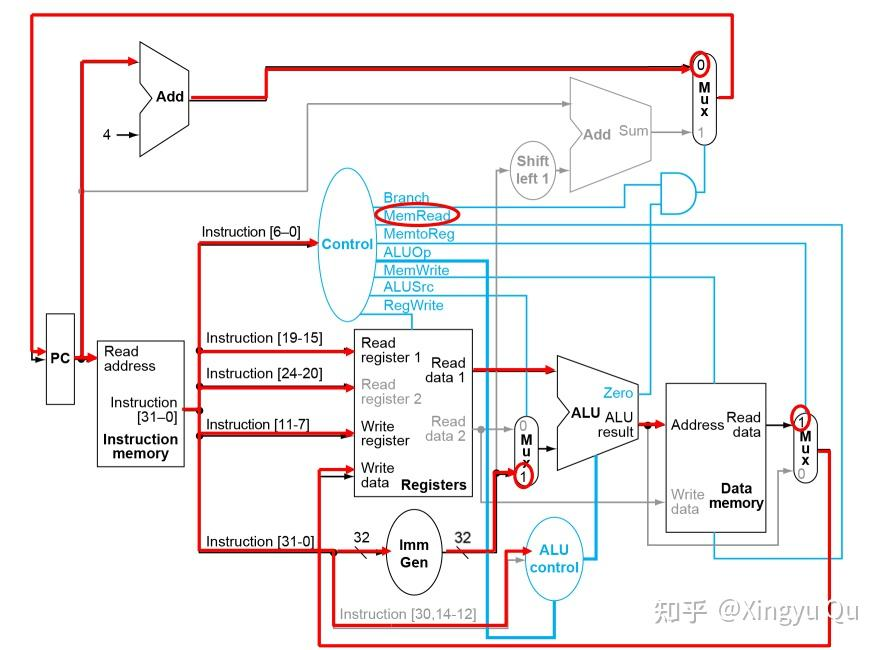
（四）store指令
lw指令操作码为0100011，指令汇编格式形如 lw x6, 8(x5)
ALUSrc=1：第二个操作数来自ImmGen
MemReg=X：设为无效位，因为没有数据流入MemReg控制的Mux
RegWr=0：不允许写寄存器
MemRd=0：不读内存
MemWr=1：写内存
Branch=0：不是分支指令
ALUOp=00
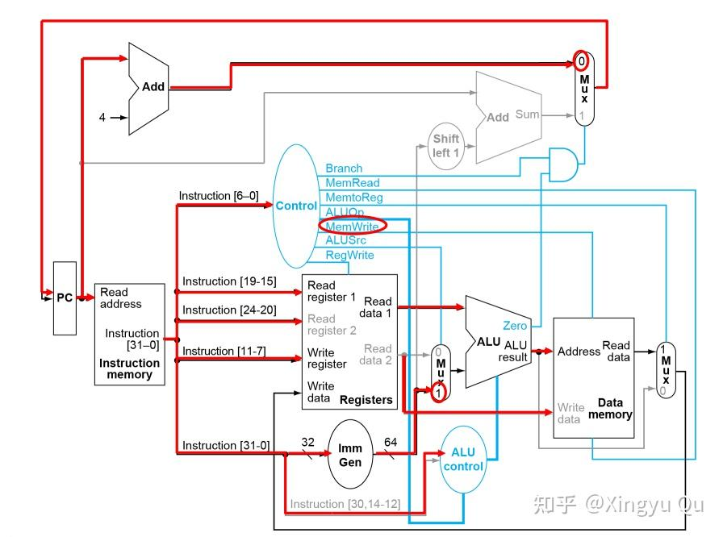
（五）beq指令
beq指令操作码为1100011，指令汇编格式形如 beq x5, x6, .L1
ALUSrc=0：第二个操作数来自rs2
MemReg=X：设为无效位，因为没有数据流入MemReg控制的Mux
RegWr=0：不允许写寄存器
MemRd=0：不读内存
MemWr=0：不写内存
Branch=1：是分支指令
ALUOp=01
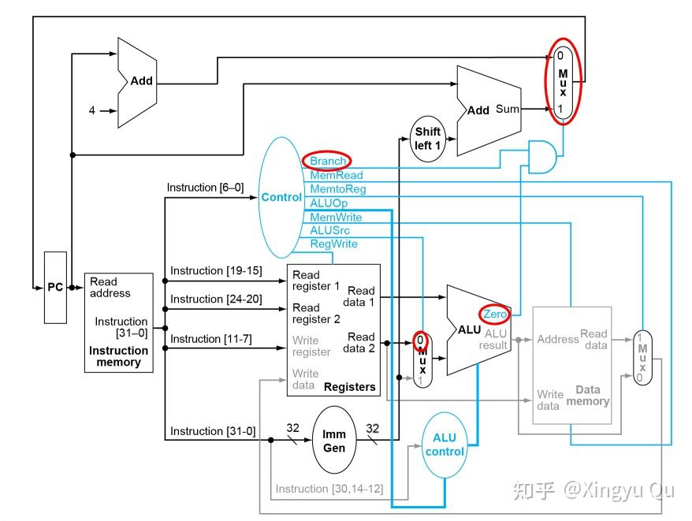
（六）控制器
由以上几种指令我们得到下图的真值表：
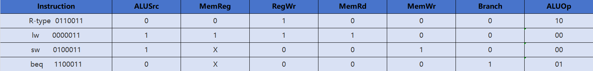
可以在vivado中使用verilog语言仿真，得到电路的设计图，这种控制器叫组合逻辑控制器（Combinational Logic Control）。
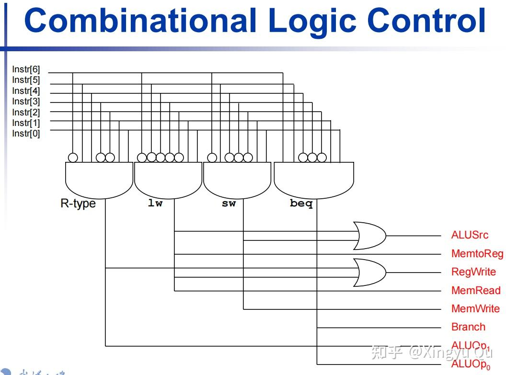
在这里我们仅仅以几条指令为例，而如果将RISC-V的指令全部列出，会得到一张相当复杂的真值表。
所以可以使用另一种控制器——存储型控制器，它通过ROM（只读内存）来记忆不同指令的控制信号，避免了组合电路的繁重设计。
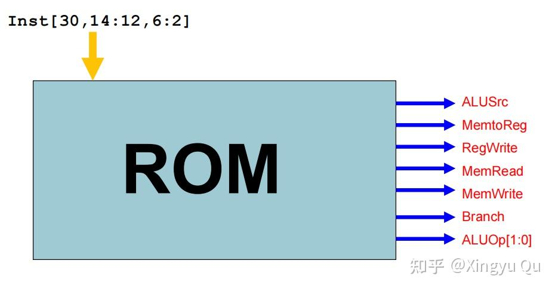
（七）指令拓展
在后续的设计中，需要实现数十种RISC-V指令，现有的控制信号不够，则考虑添加。
如jal指令，汇编格式例如 jal x1, L1.
其执行的步骤为：
（1）计算PC相对地址（例如beq中的操作只不过是无条件跳转）
（2）保存PC+4到x1
（3）PC <- (新地址)
（其中1,2可并行）
不难想到，这里的操作很多都可以用beq的部件完成，但是有一些问题：
1.原有的beq指令实现PC跳转的逻辑是branch&zero，而这里ALU没有参与构建数据通路，zero自然没有输出，所以加入一个jal信号，和原有的（branch&zero）作或操作，实现操作。
2.x1 <- PC+4的实现. 需要将PC+4的结果送入现有的MemReg选择器中（变为3路选择器），写入寄存器。
当然，以上的实现方式不是唯一的，只是举例说明实现之后的指令如何拓展控制信号和数据通路。
（八）指令执行的时间评估
假设，读取内存（指令内存和数据内存）需要200ps，ALU和adder需要200ps，读写寄存器需要100ps，评估我们现在实现的几种指令执行，具体路径可结合前述指令执行步骤分析。
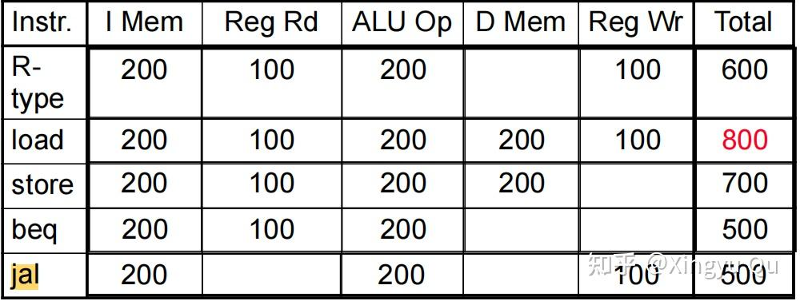
其中load指令耗费的时间最长，因为它占满了所有环节；此外，需要关注指令执行的步骤中哪些是可以并行的（比如load和store中ImmGen和ALU可以并行），找出操作时间的关键路径，即为total time。
总结
本讲介绍了控制信号的设计，并描绘出处理器的雏形。
尽管单周期指令执行的设计可以正确工作，但是现代设计中，我们会使用多周期实现以及流水线设计来加快指令执行的效率，我们会在后面的课程中一起学习。